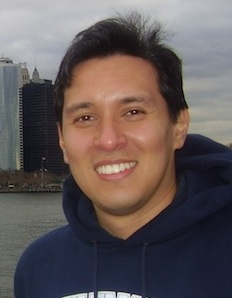

Introduction
SOPT is an open-source code that provides functionality to perform sparse optimisation using state-of-the-art convex optimisation algorithms. Furthermore, SOPT implements the SARA algorithm, where the average sparsity of images over a set of dictionaries is exploited.
SOPT is written in C++ primarily but also contains partial Matlab support. SOPT is largely provided to support the PURIFY package, a companion open-source code to perform radio interferometric imaging, also written by the authors of SOPT. For further background please see the following paper.
This documentation outlines how to obtain SOPT,
before describing installation details, source code documentation
and Matlab support. Reference, license and author information then
follows.
Download
SOPT is an open-source package available under the license described below.
The latest version of SOPT code is available at github.
Installation
The SOPT code is written in C++, hence a suitable C compiler will be required to build the main code. In the following the dependencies of SOPT are described, before outlining instructions to compile, test, self-document and clean the code.
Dependencies
The SOPT library itself requires the following software:
- CMake: a free software that allows cross-platform compilation
- tiff: Tag Image File Format library
- OpenMP: Optional. Speeds up some of the operations.
- UCL/GreatCMakeCookOff: Collection of cmake recipes. Downloaded automatically if absent.
- Eigen 3: Modern C++ linear algebra. Downloaded automatically if absent.
- spdlog: Optional. Logging library. Downloaded automatically if absent.
- philsquared/Catch: Optional - only for testing. A C++ unit-testing framework. Downloaded automatically if absent.
- google/benchmark: Optional - only for benchmarks. A C++ micro-benchmarking framework. Downloaded automatically if absent.
Compiling
Once the dependencies are present, the program can be built with:
>> cd /path/to/code
>> mkdir build
>> cd build
>> cmake -DCMAKE_BUILD_TYPE=Release ..
>> make
To test everything went all right:
>> cd /path/to/code/build
>> ctest .
To install in directory /X, with libraries going to X/lib, python modules to
X/lib/pythonA.B/site-packages/sopt, etc, do:
>> cd /path/to/code/build
>> cmake -DCMAKE_INSTALL_PREFIX=/X ..
>> make install
Matlab
A separate Matlab implementation is provided with SOPT. This implementation includes some (but not all) of the optimisation algorithms implemented in the C++ code, including the SARA algorithm.
The Matlab implementation is contained in the matlab
directory. This is a stand-alone implementation and does not call
any of the C++ code. In future, Matlab interfaces to the C++ code may
also be included in SOPT.
See matlab/README.txt for an overview of the Matlab
implementation. The stand-alone Matlab implementation is also
self-documenting; corresponding documentation can be found in
matlab/doc. We thank Gilles Puy for contributing to this
Matlab implementation.
Referencing
If you use SOPT for work that results in publication, please reference this site (http://basp-group.github.io/sopt/) and our related academic papers:
R. E. Carrillo, J. D. McEwen and Y. Wiaux, Sparsity Averaging Reweighted Analysis (SARA): a novel algorithm for radio-interferometric imaging, Mon. Not. Roy. Astron. Soc., 426(2):1223-1234, 2012.
ArXiv:1205.3123 | DOI:10.1111/j.1365-2966.2012.21605.x
R. E. Carrillo, J. D. McEwen, D. Van De Ville, J.-P. Thiran, and Y. Wiaux, Sparsity averaging for compressive imaging, IEEE Sig. Proc. Lett., 20(6): 591-594, 2013.
ArXiv:1208.2330 | DOI:10.1109/LSP.2013.2259813
A. Onose, R. E. Carrillo, A. Repetti, J. D. McEwen, J.-P. Thiran, J.-C. Pesquet, and Y. Wiaux, Scalable splitting algorithms for big-data interferometric imaging in the SKA era, Mon. Not. Roy. Astron. Soc., 462(4):4314-4335, 2016.
ArXiv:1601.04026 | DOI:10.1093/mnras/stw1859
License
SOPT: Sparse OPTimisation
Copyright (C) 2013 Rafael Carrillo, Jason McEwen, Yves WiauxThis program is free software; you can redistribute it and/or modify it under the terms of the GNU General Public License as published by the Free Software Foundation; either version 2 of the License, or (at your option) any later version.
This program is distributed in the hope that it will be useful, but WITHOUT ANY WARRANTY; without even the implied warranty of MERCHANTABILITY or FITNESS FOR A PARTICULAR PURPOSE. See the GNU General Public License for more details (LICENSE.txt).
You should have received a copy of the GNU General Public License along with this program; if not, write to the Free Software Foundation, Inc., 51 Franklin Street, Fifth Floor, Boston, MA 02110-1301, USA.
About the authors
SOPT has been developed by Rafael Carrillo, Jason McEwen and Yves Wiaux. See the authors' web pages for more information.

Dr Rafael Carrillo
Academic
web page »
 Dr Jason McEwen
Dr Jason McEwen
Academic web page
»
Dr Yves Wiaux
Academic web page
»